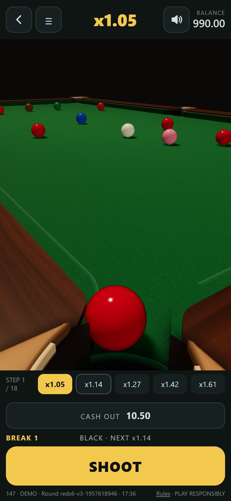
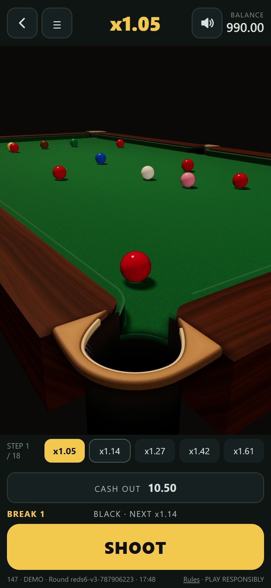
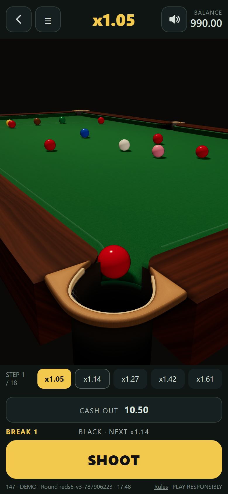
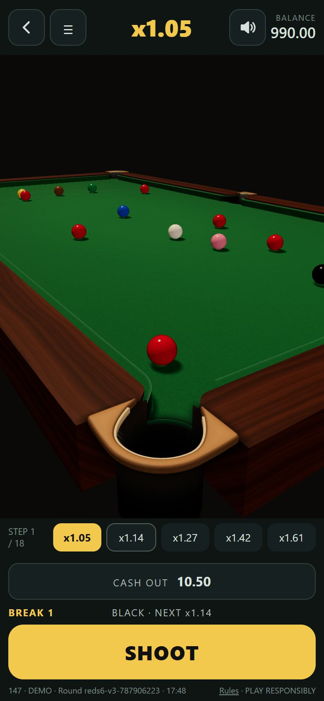
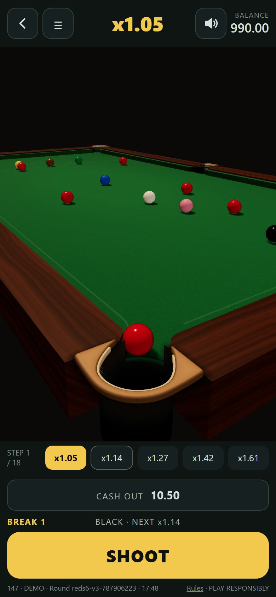
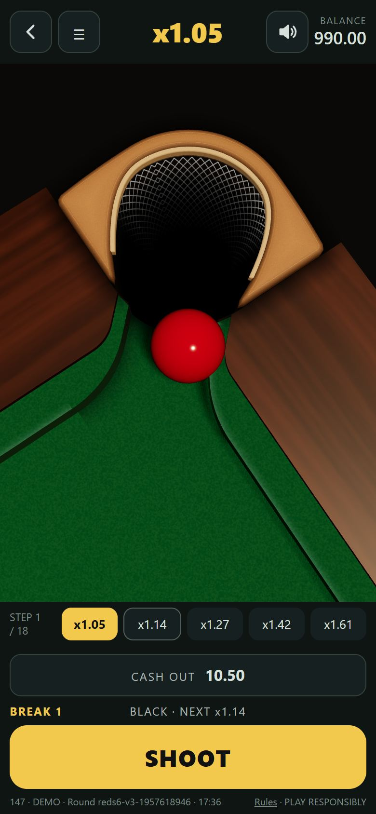

Pocket camera: P1 and two raised versions
Pictures only, the game is not changed. Owner's choice: P1 as the main view, P2 sometimes. Real game look (look A, T1 pockets, markings), full screen 390×844, mid-round. Black-end corner on the right, the same red in every picture: on top 20 cm before the pocket, below it in the jaws. "Opening in view" is measured: a 10 cm circle round the pocket's drop hole (the hole and its leather rim), at cloth height and at rim height, must be fully inside the table area in the jaws picture. Tilt = how far the camera looks down below level. The top bar, ladder, CASH OUT and SHOOT stay on screen in every picture.
P1 and the raised versions
P1 · as before
Height 30 cm, 30 cm behind the jaws, tilt 22°. Opening in view: no. The jaws picture cuts the opening and the net at the bottom edge.


P1b · a little higher
Height 40 cm, 60 cm behind the jaws, tilt 20°. Opening in view: yes. Red rolls toward you with the cue ball and the table behind it; the pocket is a bit smaller than in P1. Top third dark (the room).


P1c · higher again
Height 55 cm, 75 cm behind the jaws, tilt 20°. Opening in view: yes. More of the table behind (the black at the right edge); the pocket and the red are smaller. Top quarter dark (the room).


Why the raised versions also stand further back: raising the camera alone (still 30 cm behind the jaws) needed a tilt of 52-55° to get the opening in view, and then the table behind the red left the picture (no cue ball, no "rolling toward you"). Moving back keeps the tilt about the same as P1.
P2 · high above the pocket (used sometimes)
Height 75 cm, almost straight over the pocket, looking down. Both jaws, the leather and the net from above, and the last part of the red's path. Only the space behind the pocket is dark (the floor).


P3 · from the side (not chosen)
9 cm above the cloth, inside the cushions, about 45° off square to the path. Kept for reference.